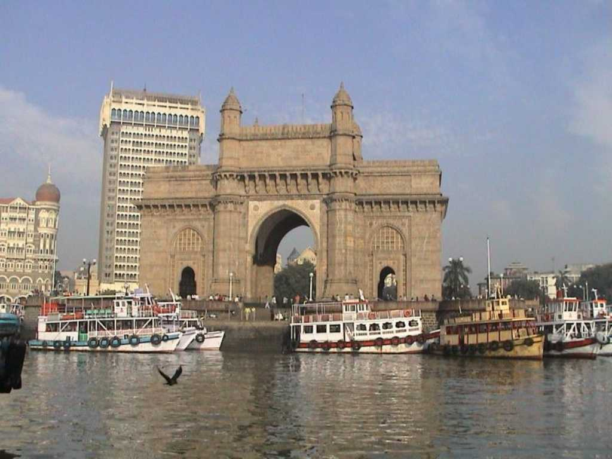
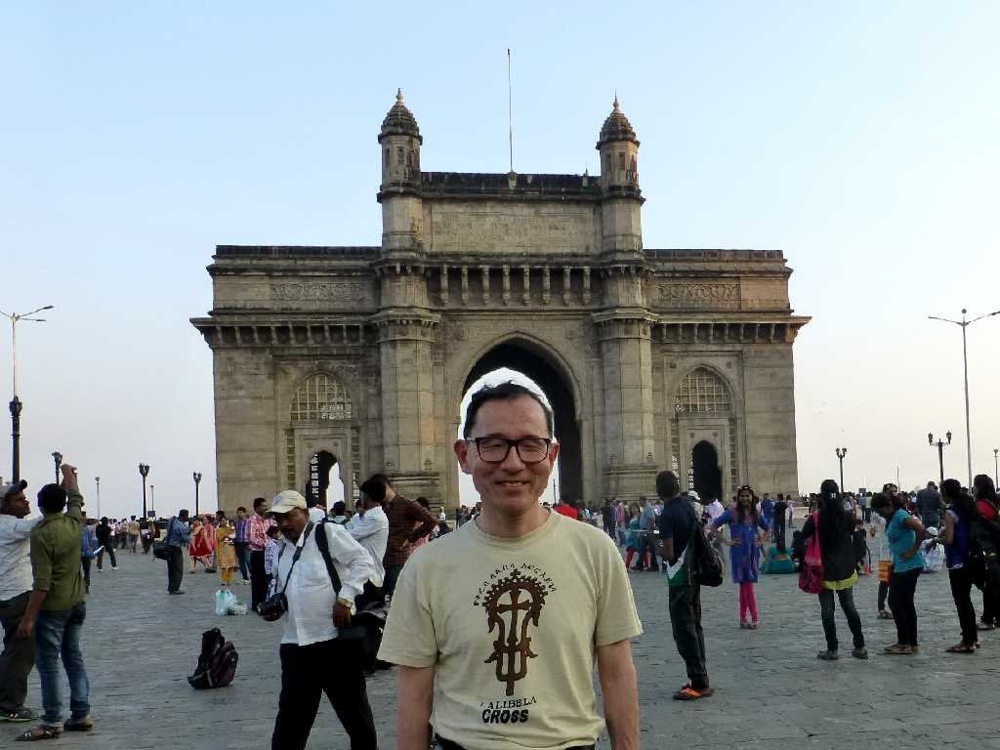
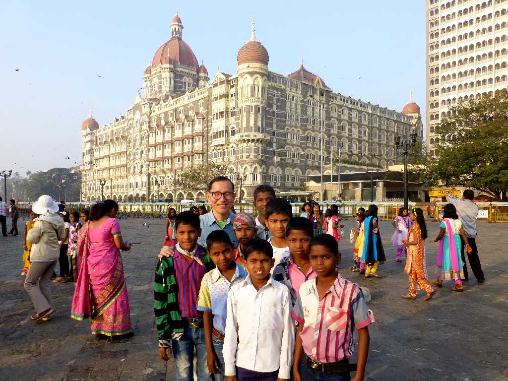
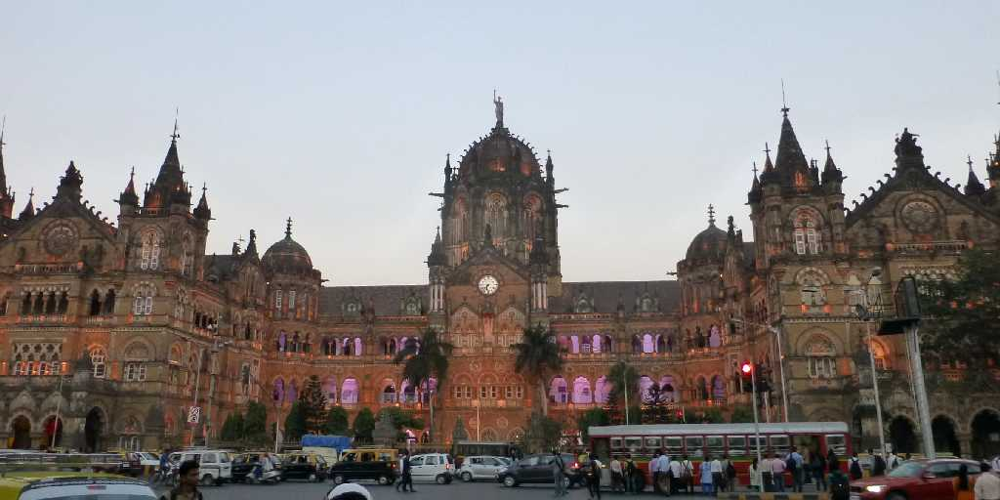

August 1985 Gateway of India Bombay
１６世紀にポルトガルが東洋の交易港として開いたが１７世紀にポルトガル王女がイギリス王チャールズ２世に嫁いだ持参金として英国に譲渡されヨーロパ交易の拠点として栄えた

February 10 2015 Gateway of India
約３０年ぶりの再訪問

February 11 2015 Taj Mahal Hotel

Chhatrapati Shivaji Terminus
チャトラパティシヴァージーターミナスはイギリス植民地時代の１８８７年に創られたヴィクトリアゴシック様式の美しい駅舎